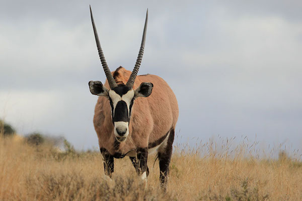

GEMSBOK
Gemsbok are large antelopes famous for their striking appearance and incredible toughness. They are part of the Oryx family and are easily recognized by their long, straight horns and beautiful black-and-white face markings. They are native to the arid regions of Southern Africa, especially the Kalahari Desert in Botswana, Namibia and South Africa. They are built to survive where most animals cannot, handling extreme heat and lack of water. A fully grown gemsbok can stand about 1.2 meters at the shoulder and weigh over 200kg, with both males and females growing impressive horns that can reach over a meter long.
What makes the gemsbok so special is how perfectly adapted it is to the desert. Unlike most antelopes, it can go without drinking water for weeks, getting moisture from the plants it eats and controlling its body temperature to avoid sweating. Those long horns are not just for show either - they use them to defend themselves against predators like lions and hyenas, and even lions are careful around them. Their muscular bodies and strong legs let them run fast and for long distances when needed. Their grey-brown coat with black markings helps them blend into the dry bush perfectly.
They are herbivores that graze on grasses but will also dig up roots and eat wild melons when food is scarce. They live in small herds of around 10 to 40 animals, usually led by a dominant male, and they are most active during the cooler hours of early morning and late afternoon.
WHERE WILL YOU FIND THEM
You will find the gemsbok at pen E24, in the northern desert section next to the giraffes.